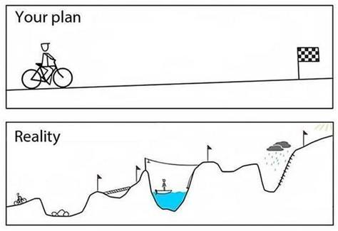

IT Notes
Hogo 指令教學:
hugo new site quickstart
cd quickstart
git init
git submodule add --depth=1 https://github.com/adityatelange/hugo-PaperMod.git themes/PaperMod
git submodule update --init --recursive # needed when you reclone your repo (submodules may not get cloned automatically)
echo "theme = 'PaperMod'" >> hugo.toml
hugo new content posts/my-first-post.md
hugo server -D
Plan and Reality 1:

Plan and Reality 2 (static):

Plan and Reality 3:

Plan and Reality 4:

Plan and Reality 5 (quickstart):